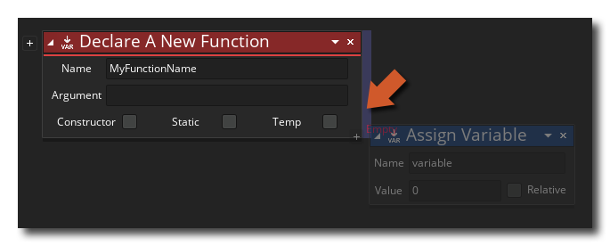
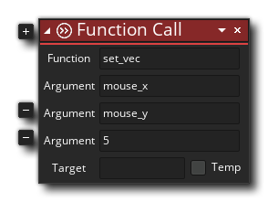
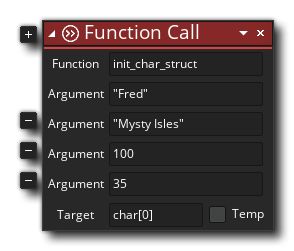

This action can be used to create a new user-defined function, which can then be called at any time later in your code. A user-defined function is one that you define to do a task that isn't covered by the available DnD™ actions or GML runner functions, and can be global, instance or local in scope (see here for more information on scope) and they can also be used as constructors to create structs. To find out more about using this action to create global functions, please see the section on Creating Action Scripts. You may also flag the function as being static, which means that it will only be defined once the first time it is used.
To use this action, you can add it to an instance event and then give the function you want to declare a name. You then provide the required argument names for each of the parameters that the function will take. If the function is to be used as a constructor (ie: it's going to be creating a struct) then you need to check the Constructor flag, and if the function is only going to be used locally in the same event and nowhere else then you can also select the Temp flag. Once you have defined the name and parameters you can add the actions that you want the function to run when it is called in your code by dropping them to the side of the action, as shown in the image below:

You can see examples of use as both a regular function and a constructor function below.
Argument Description Function The name of the new function. Argument0 ... ArgumentX The different arguments names for each of the parameters that are to be passed to the function.
The above action block code would go in the Create Event of an instance, and declares a new function set_vec with three arguments: _x, _y and spd. These arguments are then used in the actions that the function will call to set the direction and speed of the instance, when the function is called. You would call the function using the Function Call action in any subsequent event, like this:
The function is called and it sets the instance direction to point towards the mouse X/Y position, and sets the speed of the instance to 5.
The above action block code would probably go in the Create Event of an instance, and declares a new constructor function init_char_struct with four arguments: _str1, _str2, _val1 and _val2. These arguments are then used to populate the given variables within the struct that the function is creating. You would then call the function using the Function Call action in any subsequent event, like this:
The function is called and it will return a new struct to the array "char", and the struct will be populated with the variables "name", "location", "hp" and "mp", set to the values used for the corresponding arguments in the function.